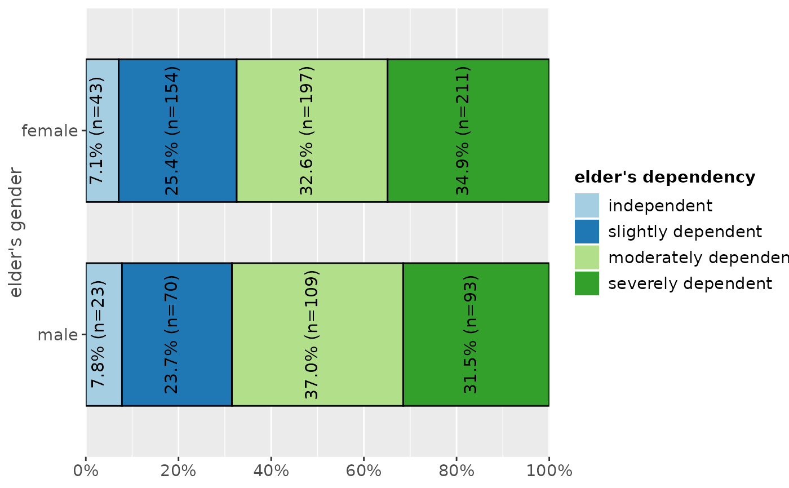
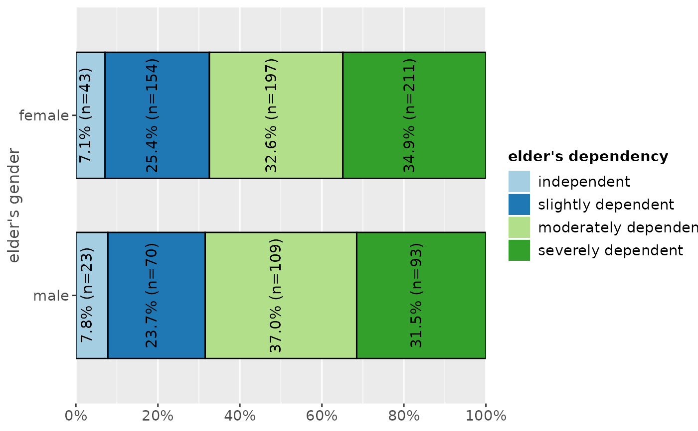

Plot proportional crosstables (contingency tables) of two variables as ggplot diagram.
plot_xtab(
x,
grp,
type = c("bar", "line"),
margin = c("col", "cell", "row"),
bar.pos = c("dodge", "stack"),
title = "",
title.wtd.suffix = NULL,
axis.titles = NULL,
axis.labels = NULL,
legend.title = NULL,
legend.labels = NULL,
weight.by = NULL,
rev.order = FALSE,
show.values = TRUE,
show.n = TRUE,
show.prc = TRUE,
show.total = TRUE,
show.legend = TRUE,
show.summary = FALSE,
summary.pos = "r",
drop.empty = TRUE,
string.total = "Total",
wrap.title = 50,
wrap.labels = 15,
wrap.legend.title = 20,
wrap.legend.labels = 20,
geom.size = 0.7,
geom.spacing = 0.1,
geom.colors = "Paired",
dot.size = 3,
smooth.lines = FALSE,
grid.breaks = 0.2,
expand.grid = FALSE,
ylim = NULL,
vjust = "bottom",
hjust = "center",
y.offset = NULL,
coord.flip = FALSE
)Arguments
Value
A ggplot-object.
Examples
# create 4-category-items
grp <- sample(1:4, 100, replace = TRUE)
# create 3-category-items
x <- sample(1:3, 100, replace = TRUE)
# plot "cross tablulation" of x and grp
plot_xtab(x, grp)
 # plot "cross tablulation" of x and y, including labels
plot_xtab(x, grp, axis.labels = c("low", "mid", "high"),
legend.labels = c("Grp 1", "Grp 2", "Grp 3", "Grp 4"))
# plot "cross tablulation" of x and y, including labels
plot_xtab(x, grp, axis.labels = c("low", "mid", "high"),
legend.labels = c("Grp 1", "Grp 2", "Grp 3", "Grp 4"))
 # plot "cross tablulation" of x and grp
# as stacked proportional bars
plot_xtab(x, grp, margin = "row", bar.pos = "stack",
show.summary = TRUE, coord.flip = TRUE)
# plot "cross tablulation" of x and grp
# as stacked proportional bars
plot_xtab(x, grp, margin = "row", bar.pos = "stack",
show.summary = TRUE, coord.flip = TRUE)
 # example with vertical labels
library(sjmisc)
library(sjlabelled)
data(efc)
set_theme(geom.label.angle = 90)
plot_xtab(efc$e42dep, efc$e16sex, vjust = "center", hjust = "bottom")
# example with vertical labels
library(sjmisc)
library(sjlabelled)
data(efc)
set_theme(geom.label.angle = 90)
plot_xtab(efc$e42dep, efc$e16sex, vjust = "center", hjust = "bottom")
 # grouped bars with EUROFAMCARE sample dataset
# dataset was importet from an SPSS-file,
# see ?sjmisc::read_spss
data(efc)
efc.val <- get_labels(efc)
efc.var <- get_label(efc)
plot_xtab(efc$e42dep, efc$e16sex, title = efc.var['e42dep'],
axis.labels = efc.val[['e42dep']], legend.title = efc.var['e16sex'],
legend.labels = efc.val[['e16sex']])
# grouped bars with EUROFAMCARE sample dataset
# dataset was importet from an SPSS-file,
# see ?sjmisc::read_spss
data(efc)
efc.val <- get_labels(efc)
efc.var <- get_label(efc)
plot_xtab(efc$e42dep, efc$e16sex, title = efc.var['e42dep'],
axis.labels = efc.val[['e42dep']], legend.title = efc.var['e16sex'],
legend.labels = efc.val[['e16sex']])
 plot_xtab(efc$e16sex, efc$e42dep, title = efc.var['e16sex'],
axis.labels = efc.val[['e16sex']], legend.title = efc.var['e42dep'],
legend.labels = efc.val[['e42dep']])
plot_xtab(efc$e16sex, efc$e42dep, title = efc.var['e16sex'],
axis.labels = efc.val[['e16sex']], legend.title = efc.var['e42dep'],
legend.labels = efc.val[['e42dep']])
 # -------------------------------
# auto-detection of labels works here
# so no need to specify labels. For
# title-auto-detection, use NULL
# -------------------------------
plot_xtab(efc$e16sex, efc$e42dep, title = NULL)
# -------------------------------
# auto-detection of labels works here
# so no need to specify labels. For
# title-auto-detection, use NULL
# -------------------------------
plot_xtab(efc$e16sex, efc$e42dep, title = NULL)
 plot_xtab(efc$e16sex, efc$e42dep, margin = "row",
bar.pos = "stack", coord.flip = TRUE)

plot_xtab(efc$e16sex, efc$e42dep, margin = "row",
bar.pos = "stack", coord.flip = TRUE)
